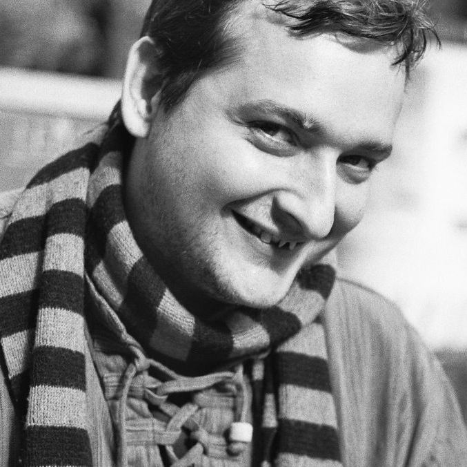

Professional software development
Great software through constant iterative test driven improvement

I am a software- and system developer, DevOps specialist and consultant. I am a software developer through and through. Besides English and German, I am a native speaker of Python.
What is important to me
The climate catastrophe is the biggest problem that we as humanity have to solve. If your project wants to contribute to that and needs a senior developer, then talk to me!
What I do
Software
On the basis of free software, I have been building and dismantling front and back ends of complex web and desktop based software systems since 1998. I am convinced that quality comes from an iterative approach in the process (inspect & adapt) and development (test-driven development).
DevOps
I run complex monoliths and service architectures, as well as the monitoring, backup and load balancing tools that are needed to support this operation, automatically reproducible on Linux. Depending on the requirements, on bare metal, in virtual machines or in containers.
Technology matrix
Studying right now: Vue.js, Deep Neural Networks, FastAI
I am best at: Python 2/3, Automatisierte Tests, UnitTests, Selenium/ Webdriver, CI/CD, Refactoring, Infrastruktur als Code, Jinja, SQLAlchemy, Alembic, API-Design, REST APIs, Shell, Nginx, CSS, Sass/SCSS, HTML5, JavaScript, jQuery, MySQL, SQLite, git
I am good at: Flask, Pyramid, Django, Tornado, PyPy, Microservices, Numpy, Pandas, Jupyter, Security, Ruby, Capybara, Apache HTTPD, HaProxy, Caddy, Jenkins, InfluxDB, Redis, CoffeeScript, Bokeh, Jasmine, Underscore.js, Backbone.js, Marionette.js, Jasmine.js, Moment.js, JSON Editor, Matplotlib, FontAwesome, BootStrap, OpenIDConnect, OAuth, Ansible, Linux Administration (RedHat/ CentOS, Ubuntu), Icinga, reproducible infrastrukture, Docker/ Container, Scrum / Agile Development (Scrum Master, iterative and inkremental, Lean Management), Open Source/ Free Software
I was once good at: Objective-C, Cocoa, XCTest, CoreData, Xcode, C/C++, Java, SmallTalk, R, TypeScript, CoffeeScript, Ember.js, SproutCore.js, Angular.js, D3.js, Make, LESS, Autotools, Vagrant, Puppet, RabbitMQ, ZeroMQ, Networks und P2P Systems, parallel Programming, Assembler, Usability, Mercurial, Bazaar, SVN, CVS, ZODB, Zope, MongoDB, Java, Eclipse, Trac, Bitten, SyncML, Bluetooth, RDF, Ontologies, 3D-Modeling, Maya, Arduino, …
Current Employment
I work for SNTL-Publishing as a lead full stack developer, lead DevOps specialist and software architect. Much of my work is focused on the predictive learning analytics tool yeepa
See also
My profiles on Xing, LinkedIn, GitHub, GitLab and OpenHub
My Curiculum Vitæ and Profile